Houlgate 2010

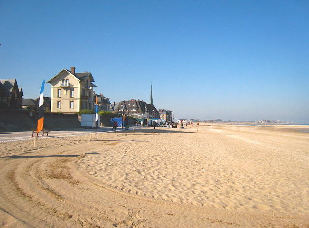
Vendredi matin, sur la plage, une très grande plage, avec des terrains tous marqués "Grands cerfs-volants" ! Bon, on pose a priori qu'on a tous de grands cerfs-volants, au moins esthétiquement, et on s'y met ! Il y a un vent solide, j'ai peur que ça ne reparte comme à Berck ou Châtel, mais c'est quand même supportable. Alors, je lance mon Albatros 2 !

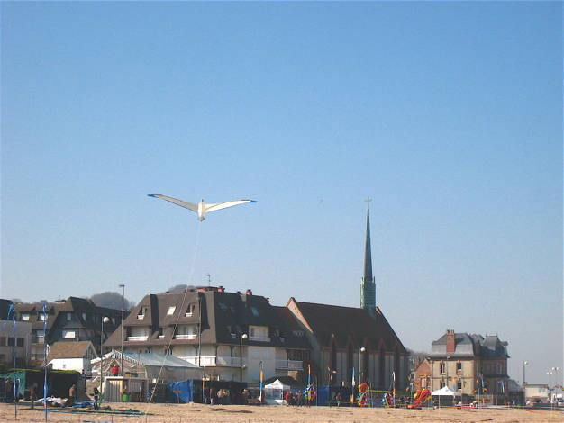
Albatros 2 n'a pas la même forme d'aile que le 1, moins pointue au bout. Et il a un corps en 3D qui m'a donné bien du mal, même si la différence ne se voit pas trop en vol !

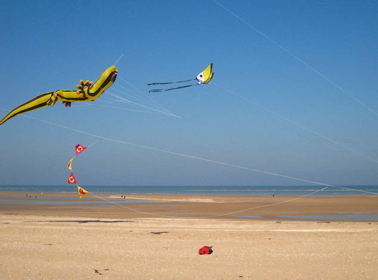
Je monte bien sûr les fanions CVCF, avec une longue bride inférieure pour que les fanions soient sur la partie verticale, et finalement c'est bien lisible, sans ajouter de lest à ce pauvre cerf-volant ! Nos voisins ont un (grand) Gecko et un papillon...

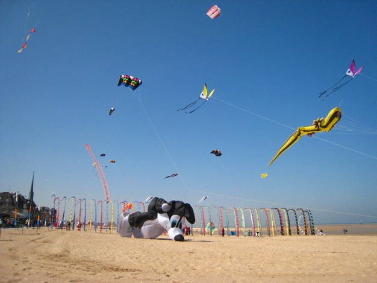
Ils ont aussi un énorme chien-chien qui vole ventre à terre, pas si courant !

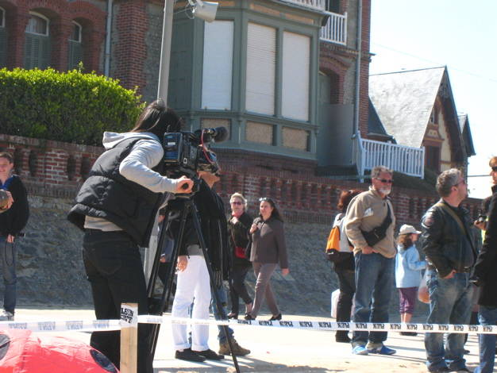
Il y a du monde sur la promenade par cette belle journée, ça intéresse même la télévision...

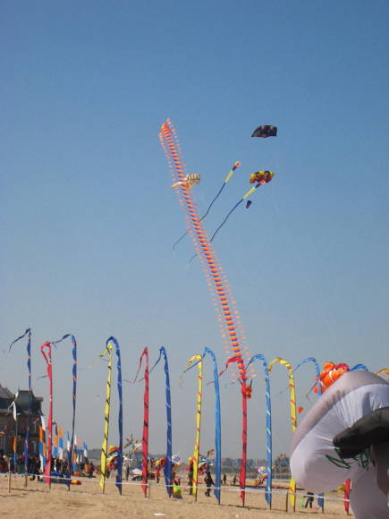
Michel Boucard a planté ses bannières et lancé quelques gros et autres... Ludo a sorti un autre dragon qu'à Berck, en spi et fibre de verre, celui-là, moins fragile. Et, comme tous les dragons, il aime bien le vent !

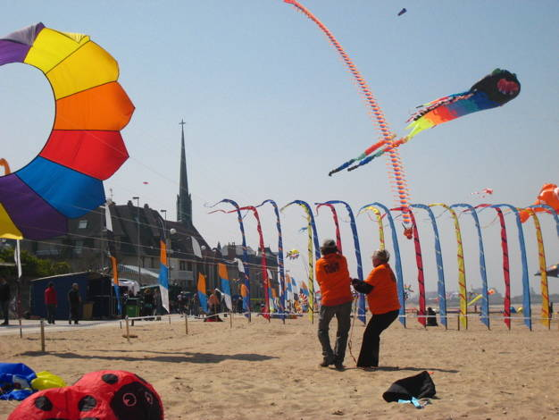
Un grand Trilobyte a pris son vol sans problème... Du vent, alors les L'Higuinen n'ont sorti que leur petit bol. Mais le vent tourne, il faut le déplacer, et même petit, ça tire !

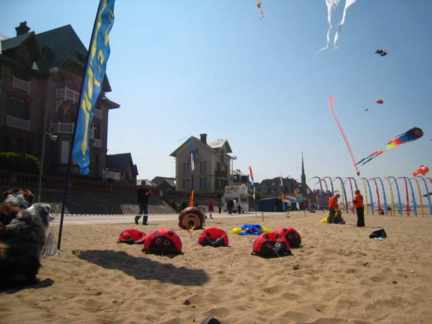
Les coccinelles, elles se porteraient bien si les tentes ne les masquaient pas !

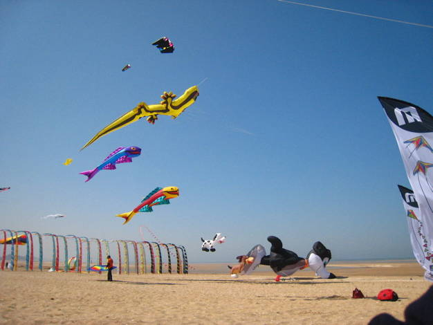
Bon, finalement, avec 2 poissons de plus, la faune de notre terrain se porte assez bien !

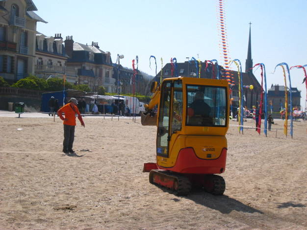
Pour les ancrages, tout est prévu : un bac à disposition avec des piquets de 80 cm en fer à béton, et des plaques de tôle portant une chaîne centrale... Et aussi une pelleteuse pour enfouir les plaques ! Mais elle est très lente, à se déplacer comme à pelleter... Patrick pointe l'emplacement voulu...

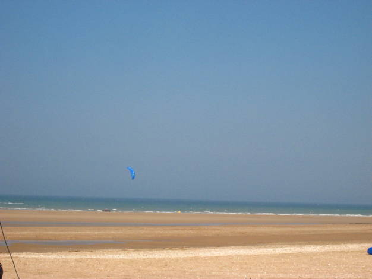
Au bord de mer, les chars à voile tracent. Le club est surtout axé sur le char et le kite-surf, en liaison avec le parapente...

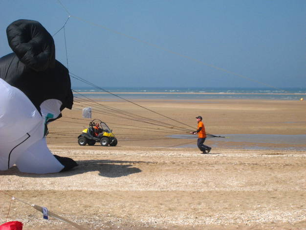
L'organisation dispose aussi d'une petite auto à essence qui peut se déplacer sur le sable, c'est bien pratique pour être partout !

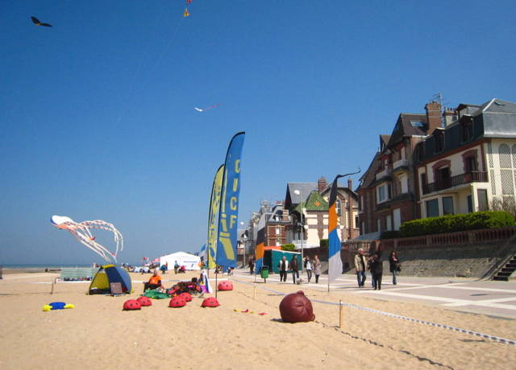
Le camp CVCF est reconstitué, mais à l'économie : on n'est pas nombreux, et les L'Higuinen ont la flemme de monter leur tente !

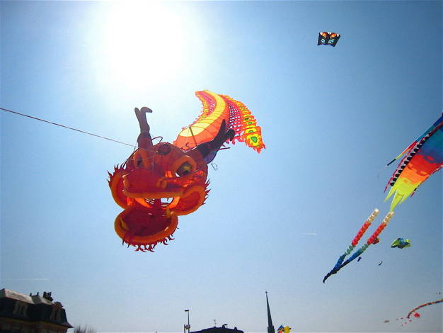
Cette fois, j'ai pu prendre le dragon de Ludo de près, il a vraiment une tête horrible, et des flammes qui s'agitent partout !

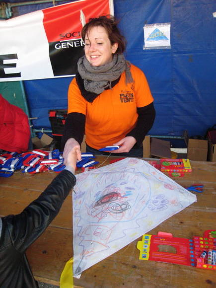
Sur la promenade, un atelier classique où les enfants peuvent construire et décorer de grands Eddies...

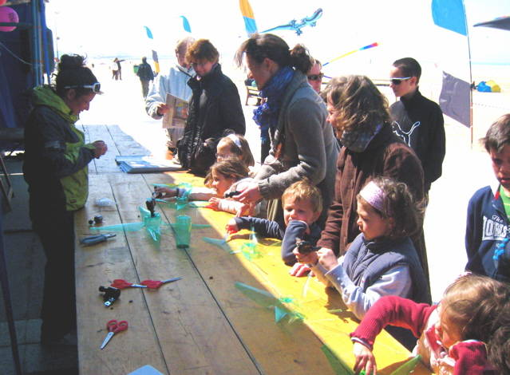
Il y a aussi un atelier didactico-écologique où les enfants construisent des éoliennes avec des bouteilles découpées. L'axe est une dynamo de vélo, et il faut que la lampe s'allume in fine...

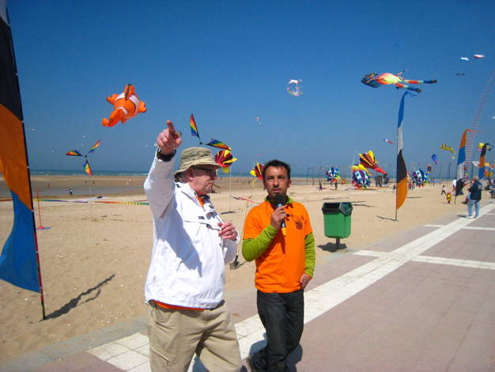
Le directeur de l'atelier commente son entreprise en direct au micro général !

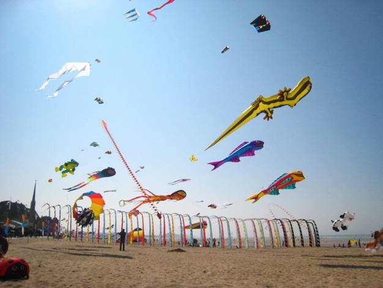
Pour un jour d'attaque, il y a quand même une assez forte densité de cerfs-volants sur les terrains, sans compter les jardins du vent...

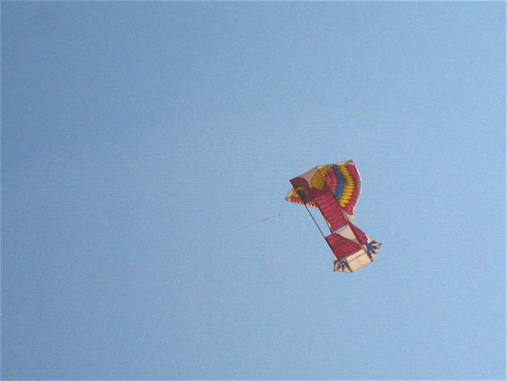
On nous présente un cerf-volant ancien, mais il me semble que la couleur est bien fraîche, même s'il a vieilli dans une malle...

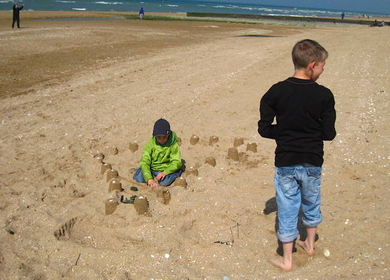
Sur la plage, pas mal de baigneurs pour la saison et les enfants créent des châteaux de sable toujours différents...

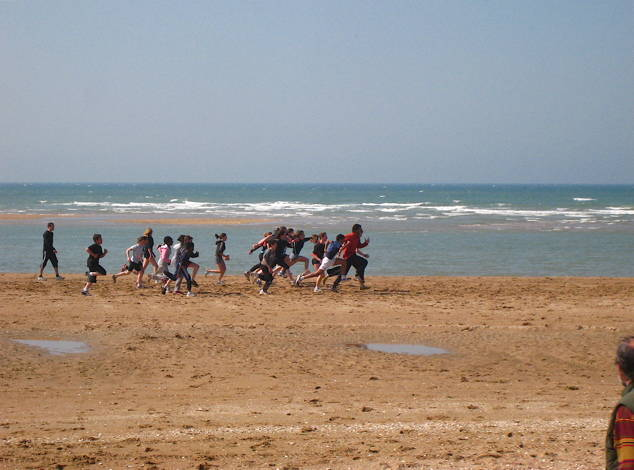
En bordure de mer, un groupe de jeunes ados s'entraîne sous la direction d'un moniteur... Le mouvement semble facile, mais en fait, il faut s'arrêter à chaque foulée, en restant en flexion basse !

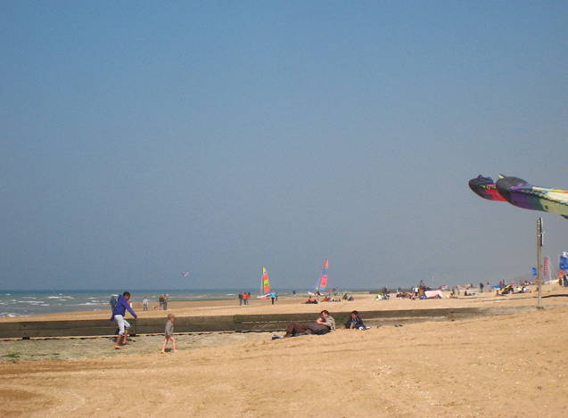
Après le Village de la Glisse des kiters, 2 catamarans feront aussi des sorties d'initiation !...

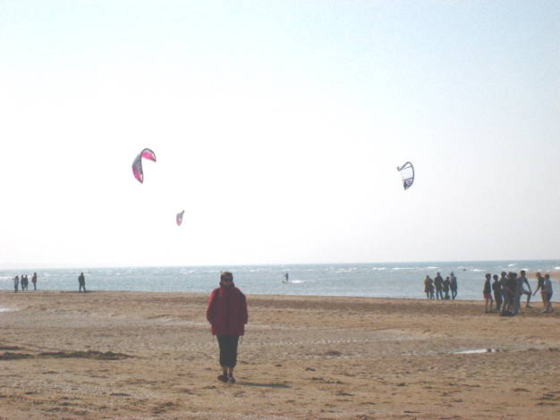
Les Kiters sont aussi de sortie sur l'eau. Mais eux, ils veulent beaucoup de vent, et il sera plutôt trop faible pour la compétition de longue distance qu'ils prévoyaient !

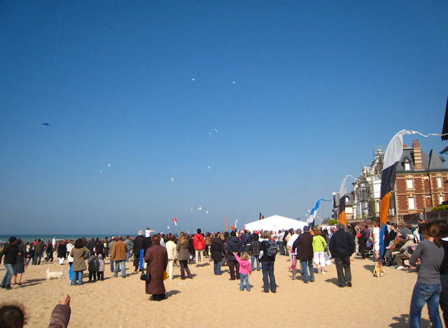
Il fait beau, il y a maintenant un monde fou sur la promenade, et sur la plage ! D'autant qu'un lâcher de bonbons est en train et que les enfants s'y précipitent, mais aussi les parents qui ne peuvent s'empêcher de se mettre au milieu pour favoriser leur progéniture au lieu de la laisser s'amuser...

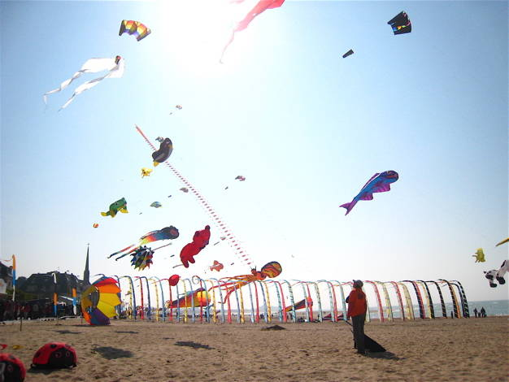
Toujours beaucoup de monde en l'air, même quand l'après-midi s'avance ! Tous veulent profiter du beau temps...

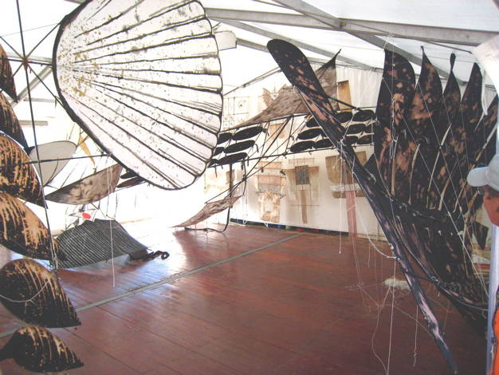
Sous la grande tente, une expo de cerfs-volants que je n'ai jamais vus, et je ne connais pas l'auteur, dommage... Un album de photo doit porter son nom, mais la couverture est scotchée sur la table ! Les teintes de base sont sombres et naturelles, et les structures complexes...

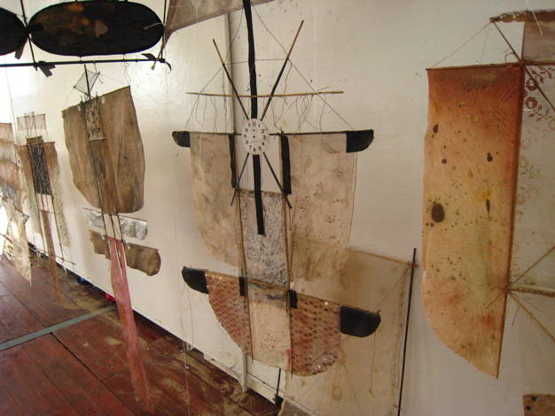
A part les grandes structures, l'auteur présente aussi des tailles plus classiques, comme cette"horloge", toujours dans des tons naturels : goudron, rouille, délavé !

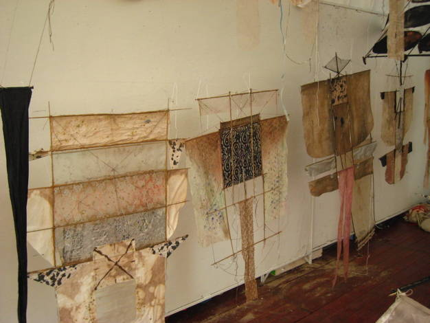
Toujours dans la même veine, ces structures rectangulaires...

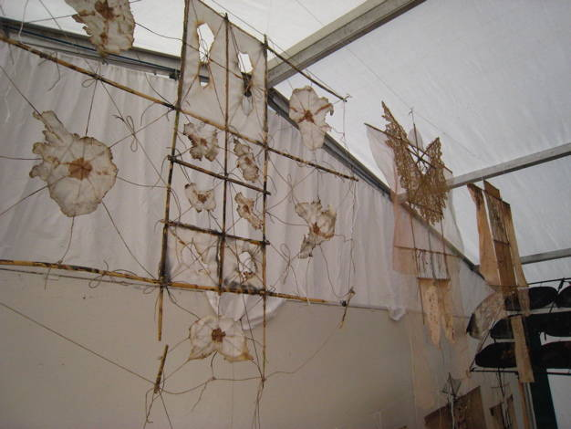
Un dernier "grand", très ventilé et tissé d'un tas de ficelles artistiquement mollies pour l'esthétique !

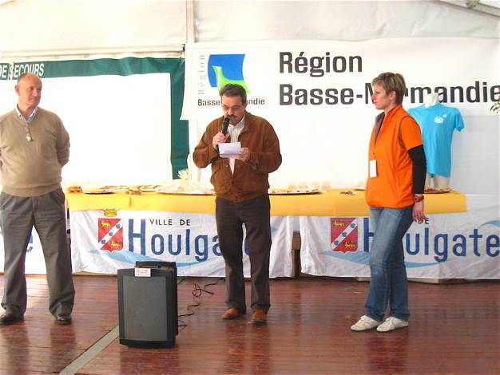
Ce soir, briefing officiel. Monsieur le Maire remercie et promet que ça continuera. Le représentant de la Région (à gauche) fera aussi un speech amusant, ironisant sur la Présidente (Agnès Pincepoche, à droite) et sa ténacité dans ses demandes !

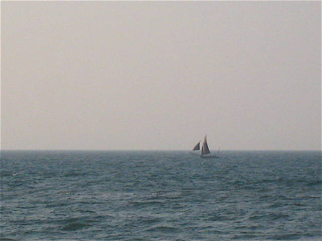
Au large, un bateau de pêche rentre au port, à la voile, mais sans doute plus en exercice...

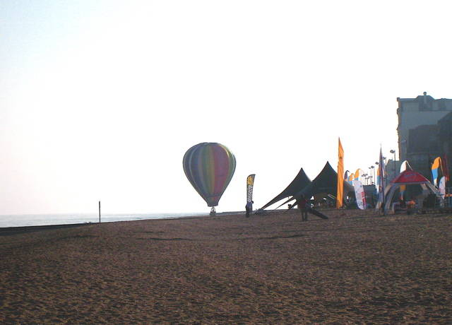
Sur la droite de la plage, une mongolfière fera de la vulgarisation. Elle se gonfle de temps en temps, pour des sauts de puces tenus à bras d'homme, mais jamais pour de vrais vols...

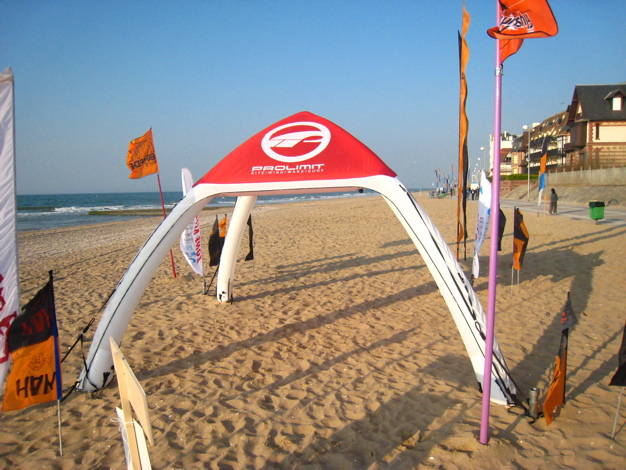
Les Kiters ou leur sponsor ont monté une tente gonflable. Un concept simple et facile à mettre en oeuvre (avec une pompe à voile de kite) et incassable ! Mais la surface abritée par ce modèle est plutôt limitée !

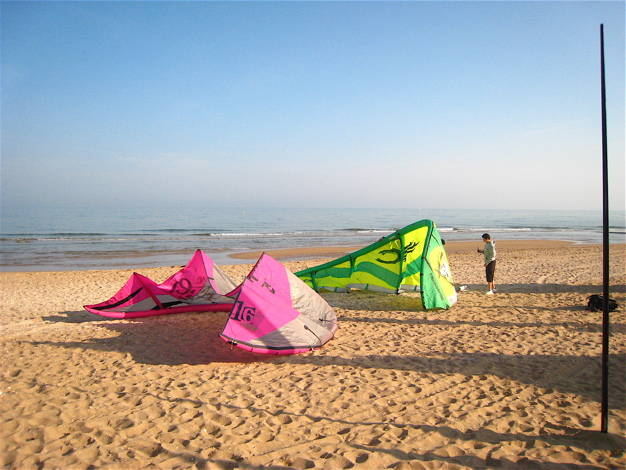
Les kiters eux-mêmes ont d'autres surfaces de toile, autrement plus musclées... Mais faut toujours pomper !

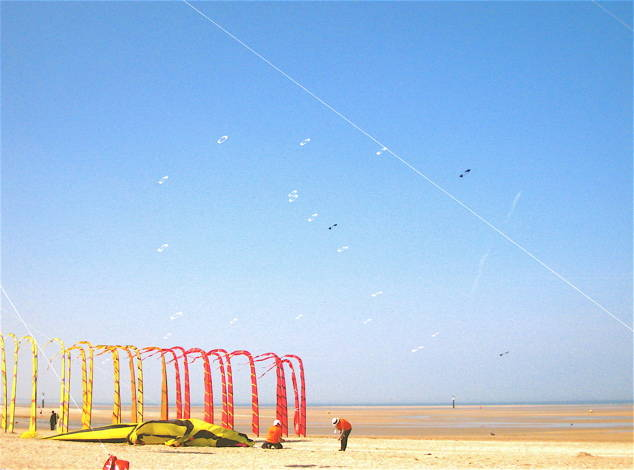
Samedi matin, pas grand vent. Le Gecko survit en rampant, les "Bulles d'Air" de Zézé n'ont pas de problèmes !

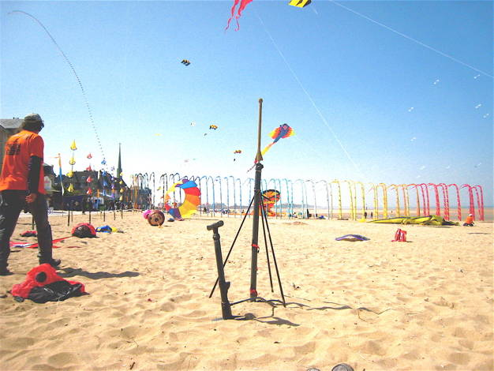
C'est le moment, j'ai sorti ma fusée. Par vent calme, on monte vers 30 m, et on retombe au mètre près dans une cible tracée sur le sable ! J'avais peur d'avoir des problèmes avec le sable, la seule gêne survient au moment d'entrer la fusée, mais c'est simple : si ça force, on la ressort, on essuie le sable et ça remarche... Avec ce ciel lumineux, on avait aussi beaucoup de mal à voir la fusée monter, on ne la repérait que quand elle basculait à l'apogée... Mais un ruban de signalisation traînerait beaucoup, j'ai essayé déjà...

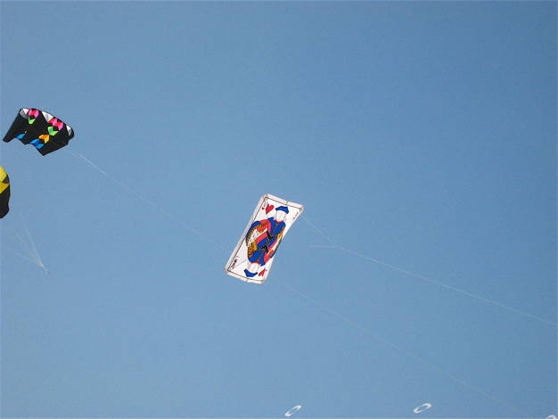
Loïc Chouaran a déjà monté ses rangées de petites éoliennes ! Il sort son atout majeur, réalisé lors d'un workshop du CVCC : le valet de coeur !

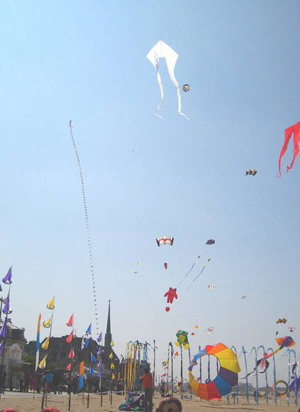
Il y a maintenant du monde : à gauche, les manches éoliennes inversées de Loïc, plus loin, le train d'Abdul qui est venu avec Ludo, des PowerSleds avec des nounours et des grenouilles, en bas le bol de Patrick, au loin, des raies !

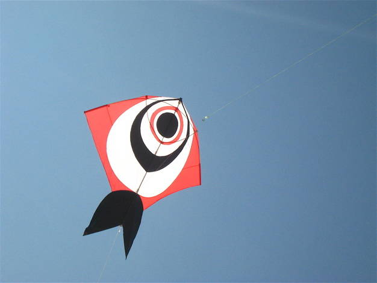
Nouveau, ce joli cerf-volant inspiré du combattant indien, mais beaucoup plus grand, et renforcé !

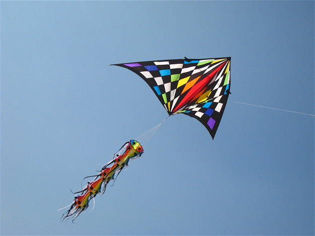
J'ai bien aimé aussi ce grand delta de style Vasarely, avec sa queue complexe et rotative !

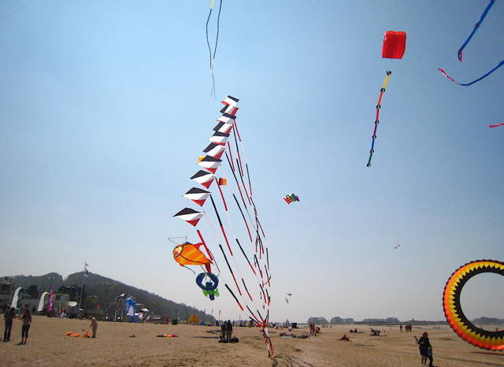
Plus loin, vers les pilotables, un train de Eddies tricolores et patriotiques. Ils volent ici en monofil, mais le bridage 3 points : 2 devant, un derrière, et le triangle inférieur semblent indiquer qu'il est pilotable à ses heures.

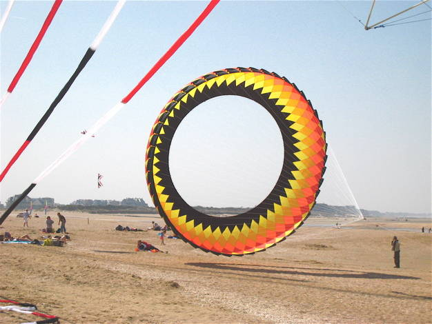
Ce bol au bel arrangement de couleurs est gigantesque et décolle bien...

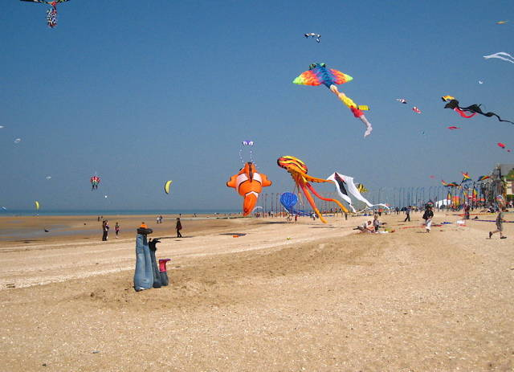
Vue de la gauche, la plage paraît aussi bien peuplée ! Attention aux sables mouvants, 3 personnes y sont happées jusqu'à la taille...

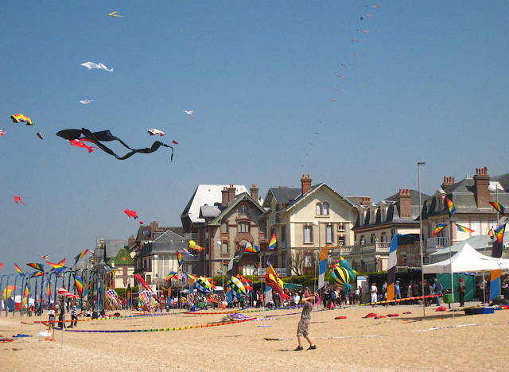
L'ensemble crée une atmosphère de fête, devant laquelle les villas anglo-normandes restent impassibles !

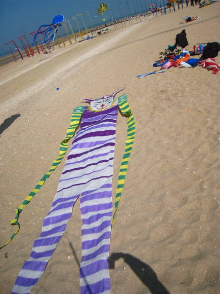
Le vent n'est pas encore régulier, j'ai vu ce cerf-volant en vol, le temps que j'arrive, il était par terre ! Il rappelle un peu l'homme de Georges Peters...

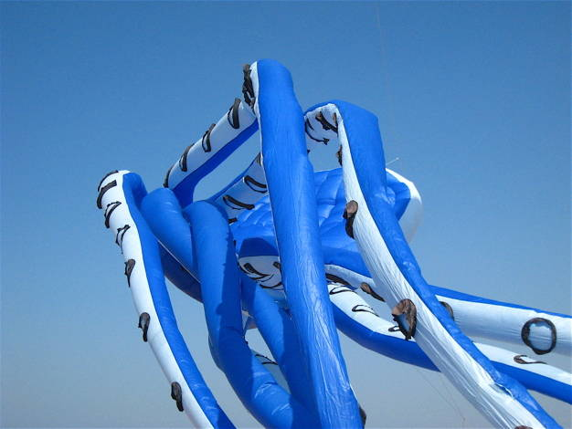
Bien sûr, il y a plusieurs pieuvres comme celle-ci, et un calmar géant. Le club d'Houlgate en a une aussi, rose, reprise des Awitas...

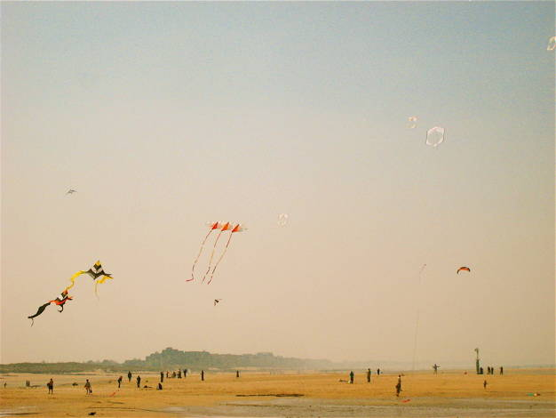
Vers la gauche, encore plus loin, Cabourg et sa plage... Entre deux, les cerfs-volants se diluent petit à petit. On voit encore cette sorte de Pellibox à 3 queues, et ces petites fibules comparables aux énormes de Michel Gressier... sauf la taille et les couleurs !

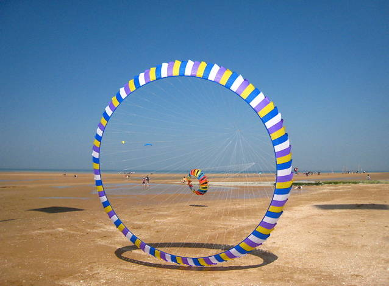
Plus près de nous, Loïc a mis sous un PowerSled 2 bols fins, qui ne tirent pas trop mais refusent de voler dans le même axe ! ...

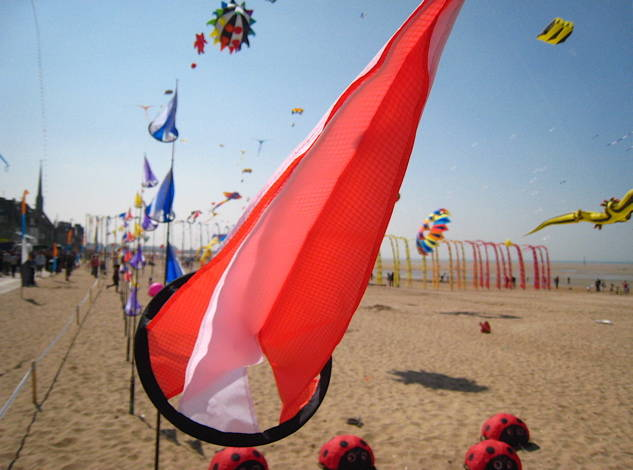
En gros plan, ses "manches", si on peut les appeler ainsi, inversées : l'air n'entre pas dedans, mais circule autour comme sur des pales...

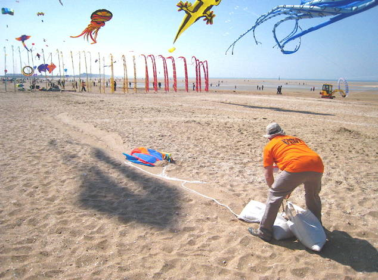
Le vent est monté, et avec les changements droite-gauche, il a fini par traîner ses sacs de sable sur une vingtaine de mètres ! Ca peut bien glisser, des sacs, c'est assez lisse !

Dans le terrain réservé aux chars (on se demande pourquoi : les chars préfèrent rouler sur le sable dur au bord de mer !), les baigneurs ont fait le même raisonnement, en tout cas ils occupent la place libre, et même en avril, on commence à voir des bronzeuses en maillot de bain !

Le vent est monté, je sors mon Condor, de plus en plus rose lui aussi, mais qui se comporte toujours bien !

Hé bien la voilà, la pieuvre du Houlgate Club, je ne vous avais pas menti ! Au fond, les "falaises" d'où partent quelques parapentes qui viennent nous survoler et se posent devant la tente, au Village de la Glisse...

Dans ma promenade, encore plein de cerfs-volants, et pas que des gonflables !

Les chars à cerf-volant font de l'initiation en double avec des attelages !

Cet ensemble de carpes Koï, sous quelque chose qui semble être un Waco, pourrait bien appartenir à Christian Bécot qu'on a vu aussi prendre des photos à la perche un peu plus tôt !

Le Trilobyte, le Calmar ont pris leur envol, ainsi que les oiseaux de Michel Boucard, sur des lignes à fanions !

Le soleil commence à descendre, et illumine la mer sous le grand Calmar à la grosse tête !

Les Kiters sont rentrés aussi, devant leur vaste tente, et s'amusent au Roll-roll, une planche posée sur un rouleau...

Ce soir, apéritif et dîner sur la terrasse du Casino...

Puis, sur la plage, animation, commentée, de la montgolfière en sauts de puce et de ballons brésiliens...

Dimanche matin, un bon petit vent, à l'opposé de celui d'hier, pas trop fort, Patrick sort son grand bol de 7 m...

On remonte le flow-form et la manche à air "Cerf-Volant Club de France", et moi, mon Albatros 1 que j'ai réglé pour le vent léger après avoir changé une ficelle qui ne voulait plus coulisser et permettre cela...

Loïc a lancé un flow-form à l'inspiration celtique, avec une grande traîne en l'honneur du Cerf-Volant Club du même nom !

Les oiseaux de Michel tendent bien leurs lignes, à nouveau...

Notre camp s'est bien sûr installé de l'autre côté du terrain, adossé aux bannières de Michel.

Michelle a pu sortir son arche de coccinelles multicolores, qui ne tiendront hélas pas toute la journée, dans des risées inégales !

La manche du Club a été redescendue, et se gonflote un peu par terre pour manifester sa présence !

Le Trilobyte s'est tranquillement assis sur son popotin en attendant des jours meilleurs !

Au bout de la plage, cette roue originale, en milar argenté et baguettes de bois, raccords bois usinés en série, et architecture différente de celles de Cassagnes ! Le créateur, de Turbulence, surveille son enfant, mais je ne le connais pas...

Peu de vent, mais les parapentistes peuvent continuer les lancers au treuil, en solo seulement cependant : il faut du vent pour lever 2 personnes... Le treuil est à gauche et, au bout du câble, devant le parapentiste, le petit parachute jaune qui freine la chute du câble...

Le parapente arrive au sommet de la trajectoire, presque à plat ! S'il continuait, il redescendrait très vite !

Ca y est, il a largué, le parachute jaune freine le câble qui retombe, et le parapente n'a plus qu'à chercher quelque ascendance sur les villas qui dévient le vent, avant de revenir se poser pour remettre ça...

Voilà, c'est terminé, je fais quelques km dans le splendide arrière-pays d'Auge ! Arrêt pour la nuit à La Roque Baignard, au hasard, sous la protection sacrée de l'église St-Martin, belle sans prétention. J'apprendrai le lendemain qu'André Gide (prix Nobel de littérature) a été, de 1896 à 1900, le maire de cette commune qui, à vue de nez, comporte un château et cinq maisons aux vastes jardins...
Houlgate 2010 : Un très bon super week-end de trois jours ! Et maintenant 13 jours de cerf-volant sans pluie ! Ca s'arrose ! Euh non, j'ai rien dit... Pour éviter des dépenses trop lourdes, le club a laissé tomber les ruineuses invitations de délégations étrangères et a réalisé lui-même l'organisation. J'espère qu'ils ont été satisfaits des prestations des Français qui sont venus ! Pour nous, il a juste manqué un peu un speaker plus disert et centré sur les monofils, mais c'est mineur. L'accueil, en tout cas, a été aimable, bien sûr, mais aussi généreux pour nous !